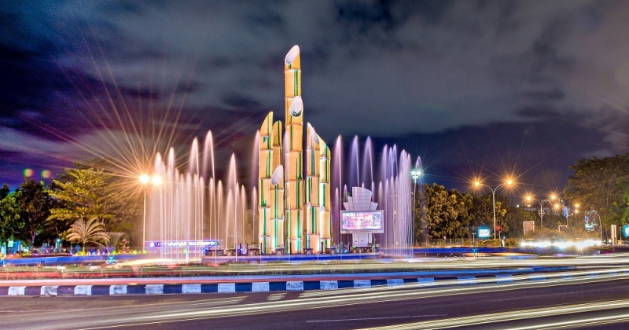

pontianak city

Pontianak City, is the capital city located in the province of West Kalimantan, Indonesia, is a vibrant urban center that boasts a unique blend of cultures and traditions. Situated right on the equator, Pontianak offers a climate that is both hot and humid, making it an intriguing destination for those interested in experiencing equatorial weather conditions. The city's rich cultural tapestry is evident in its diverse population, consisting of various ethnic groups such as the Dayak, Malay, and Chinese communities, each contributing to the city's unique social fabric. Visitors to Pontianak will find themselves immersed in a lively atmosphere where they can explore the local customs, traditions, and the everyday lives of its friendly inhabitants.
Pontianak's urban landscape is a dynamic mix of modernity and historical charm. While the city has seen significant development in recent years, it has managed to preserve pockets of its historical heritage, giving it a distinctive character. Strolling through Pontianak's streets, one can encounter a variety of architectural styles, from traditional wooden houses to modern skyscrapers, showcasing the city's evolution over time. Additionally, Pontianak is a hub for commerce and trade, particularly due to its strategic location along the Kapuas River, providing a glimpse into the economic vitality and cultural diversity that define this unique Indonesian city.